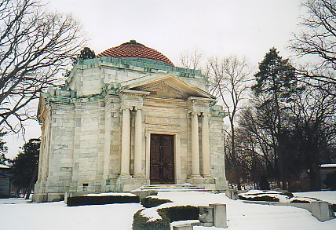
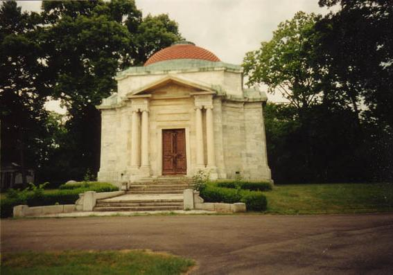
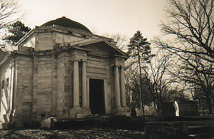
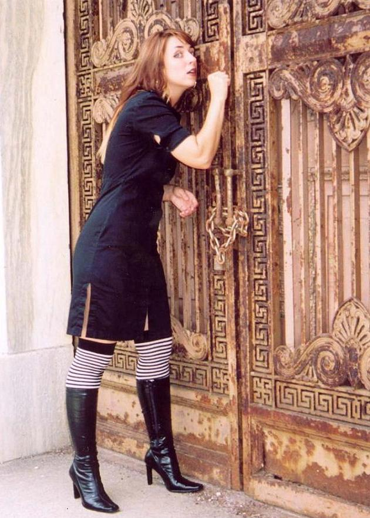
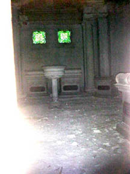
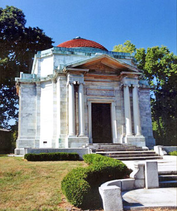
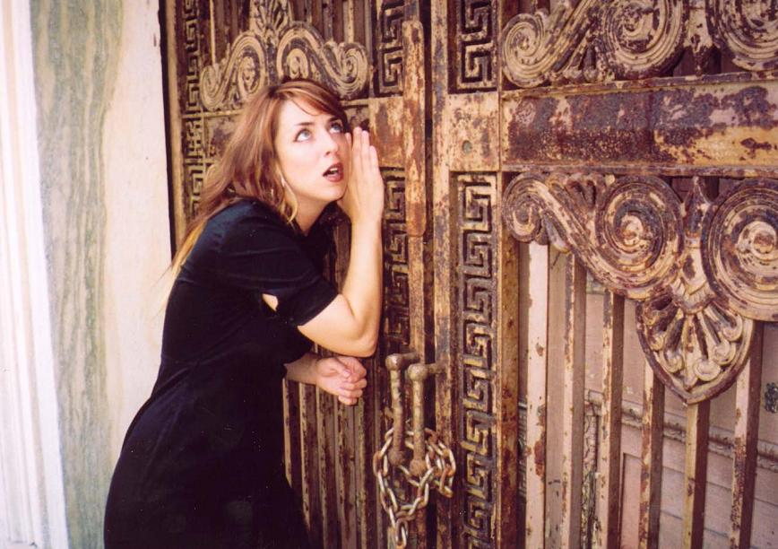

Greenlawn's most famous ghost story is the supposed haunting of the Hayden Mausoleum, which occupies a prominent spot near the center of the graveyard. It's just south of the cemetery chapel, along the edge of the swamp among other, smaller mausoleums. The Hayden building was constructed in 1904 and, like the chapel, was designed by famous Columbus architect Frank Packard. There's an entire chapter in my first book about Packard, who also designed the landmark Seneca Hotel.

Despite common misinformation (which I had posted here for some time), the mausoleum isn't home to industrialist Peter Hayden, founder of a mining company and town father of Haydenville, Ohio. As is made clear on the official Greenlawn website, this mausoleum was designed by Packard specifically for Columbus banker Charles H. Hayden.

It's not really clear why the Hayden Mausoleum is supposed to be haunted, but it most certainly is. This crypt is a staple on every ghost tour, and many books and magazine articles mention the legend. They say that, if you knock on the mausoleum's door, the spirits will respond with a knock of their own--and, if they're particularly active, a more substantial manifestation.

My lovely friend Jamie demonstrates the ghost-knock above. Every time I've been to Greenlawn--many, many times--I've taken the time to knock on Mr. Hayden's family vault. Unfortunately, I've never gotten a response. If the stories can be believed, at some point somebody has. If this is you (or someone you know), please do write an e-mail and tell me the details.

Because the doors are perpetually locked you can't get inside, but I did take this video still through the gated door. No ghosts in that shot.

Another story: a little boy is spotted sometimes sitting against the northwest gate on rainy days, head down, crying.
Charles Hayden was a banker; he had a lot of money around the turn of the century; he commissioned the construction of what is probably Greenlawn's most elaborate mausoleum in 1904; and sometime after that, he died. Members of his family took their places in the family tombs one by one. Maybe the crying boy is one of them. It's all rather vague, a case where the legends are more precise and well-known than the facts. If you know more about the Haydens, or what gives their mausoleum its spooky reputation, please enlighten me.

Ghosts of Greenlawn Cemetery
Greenlawn Cemetery: The Ghost of Dr. James H. Snook
Greenlawn Cemetery.org: Personal Mausoleums
Back